O dia passa-se cá fora.
A piscina é só da casa, e o jardim também, com entrada própria e duche ao ar livre.
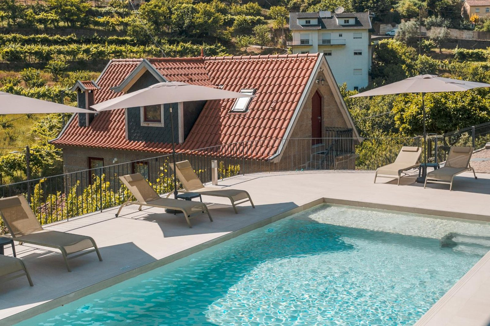
A piscina
Água turquesa, espreguiçadeiras e a casa logo atrás.
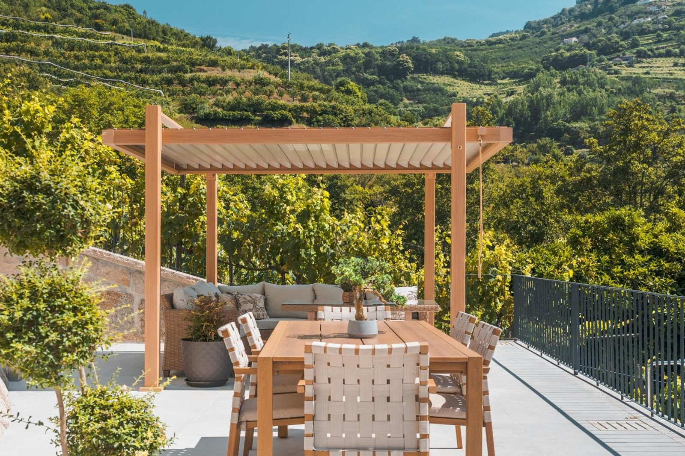
A pérgola
Uma mesa à sombra, sobre os socalcos, para almoços que se estendem pela tarde.
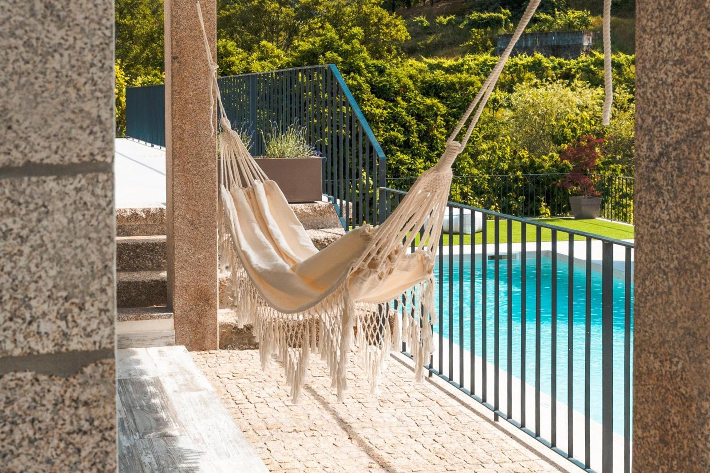
A rede
Pendurada ao lado da água, para quem só quer ler e deixar a tarde passar.
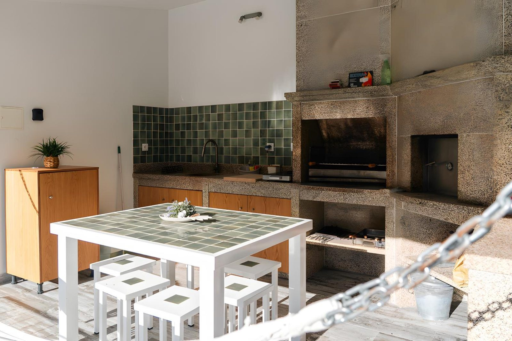
A churrasqueira
Uma cozinha exterior, com churrasqueira privada, para comer ao ar livre.
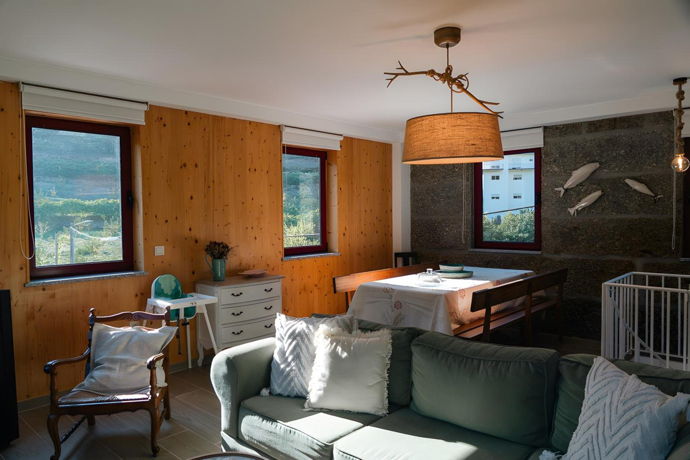
Quando o sol aperta, entra-se na pedra.
Paredes de granito, madeira de pinho e uma sala de estar e jantar num só espaço. A casa é antiga e foi remodelada para quem chega agora.
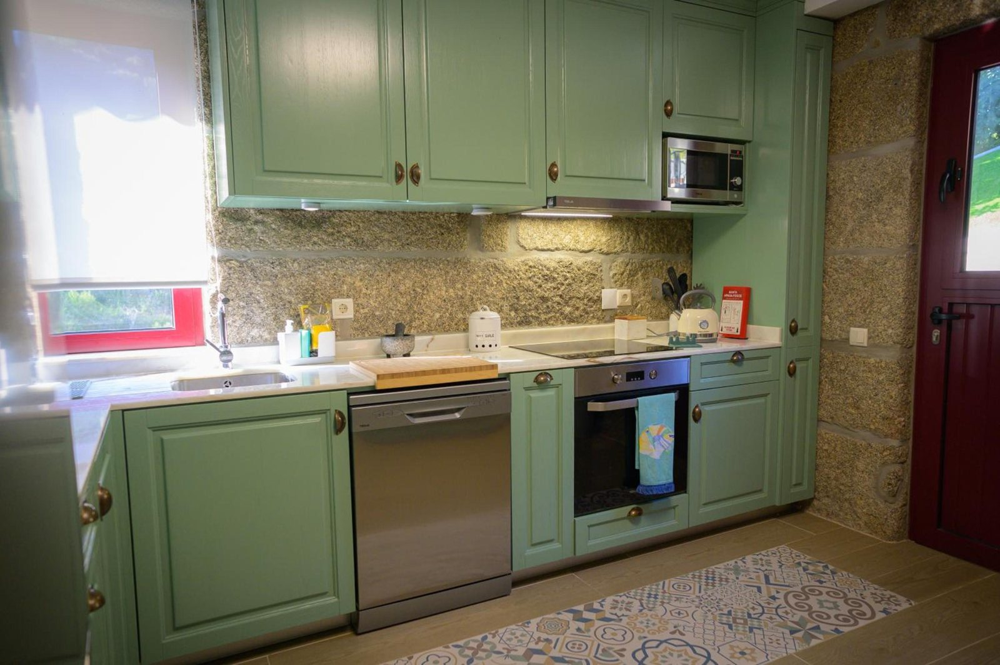
A cozinha está pronta para cozinhar a sério: forno, micro-ondas, máquina de lavar louça, máquina de café, chaleira e torradeira, e uma máquina de lavar roupa para as estadias longas.
As refeições fazem-se em casa, ao gosto de cada um.
Ar condicionado em todas as divisões, Wi-Fi gratuito, TV com streaming e estacionamento privado dentro da propriedade.
Para dormir, três quartos e três casas de banho.
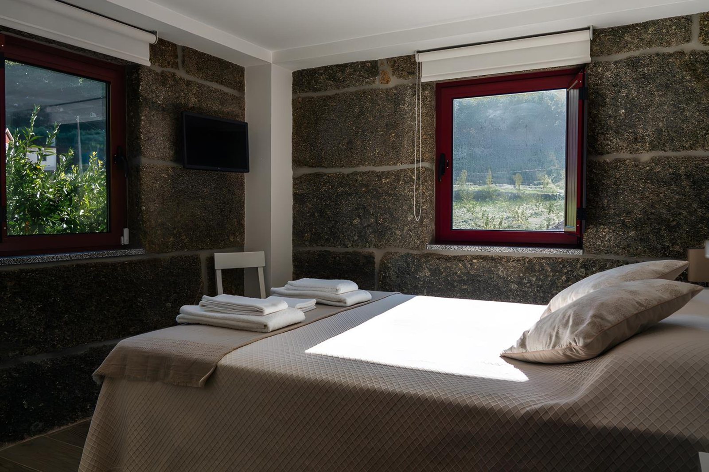
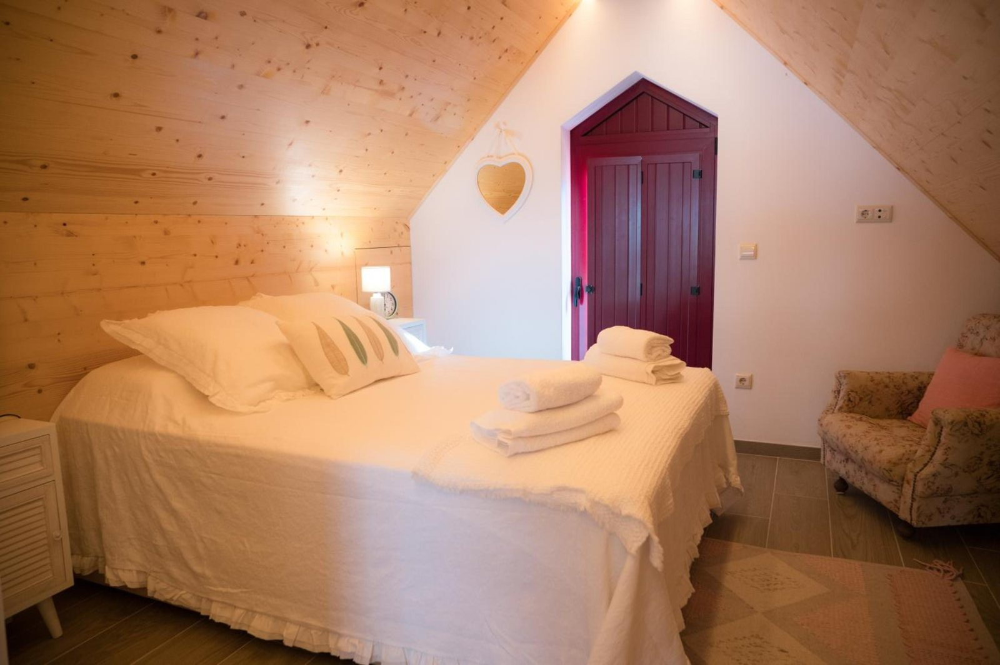

- Três quartos, uns com paredes de granito, outros com tetos de madeira no sótão, todos com janelas e portas de madeira vermelha.
- Três casas de banho, para ninguém ficar à espera de manhã.
- Para os mais pequenos, cadeira alta e portões de segurança, e berço gratuito mediante pedido.
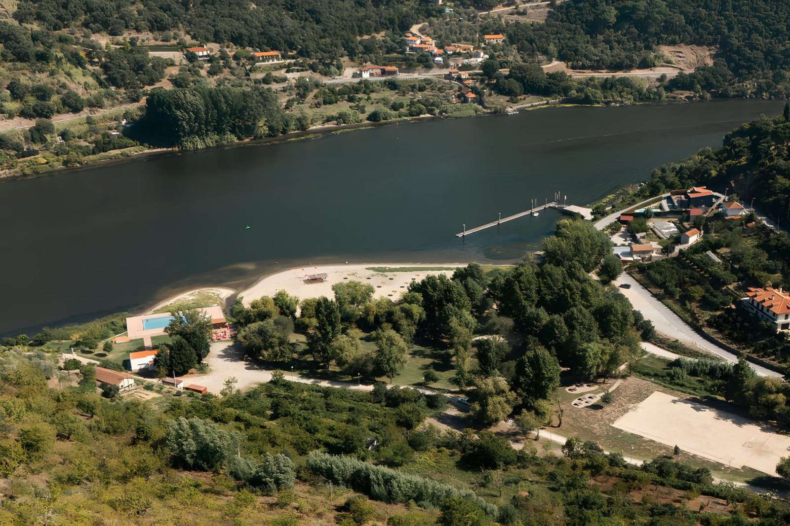
Lá em baixo corre o Douro, e à volta há mais.
A casa fica em São João de Fontoura, concelho de Resende, junto ao rio Douro. Estas são sugestões de passeio, para escolher ao sabor de cada dia.
Parque Fluvial de Porto de Rei
A cerca de 0,8 km por estrada
Praia fluvial na margem do Douro, com passadiço, pontão, cais de embarque turístico, piscina e parque de merendas, e um restaurante local de peixe do rio de escabeche e enguias.
Na foto de cima.
Rota dos Cerejais
Passa a cerca de 0,8 km por estrada
Um percurso pedestre circular de 5,7 km entre cerejais, pelo Solar de Porto de Rei e pela praia fluvial, com vistas sobre o Douro. Na floração das cerejeiras, as encostas ficam cobertas de branco.
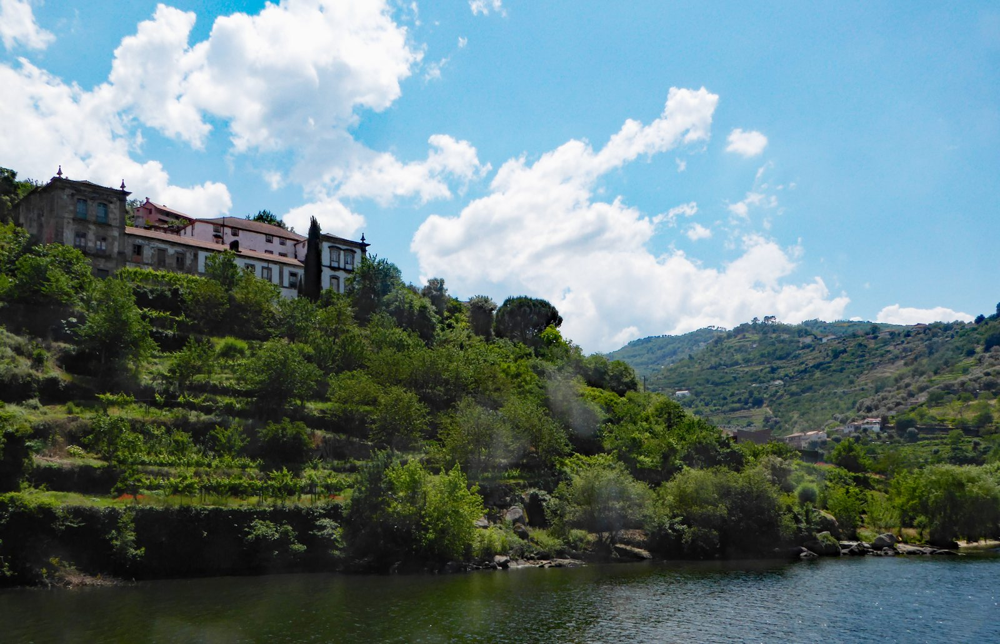
Solar de Porto de Rei. Foto: Hans Birger Nilsen / Wikimedia Commons, CC BY 2.0 Igreja de Santa Maria de Barrô
Cerca de 7 km (cerca de 9 min) de carro
Igreja românica, Monumento Nacional desde 1922, com cenas de caça nos capitéis do arco triunfal. Visita ao interior só por marcação.
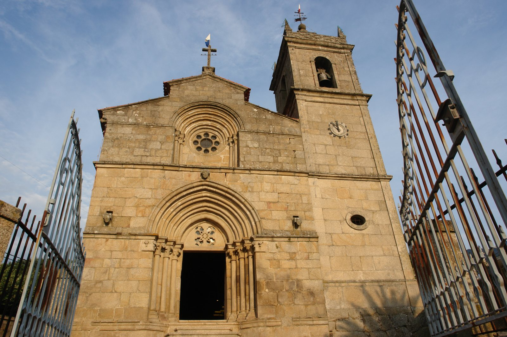
Foto: LilianaMarques / Wikimedia Commons, CC BY-SA 4.0 Museu do Douro
Peso da Régua · cerca de 23 km (cerca de 24 min) de carro
O património da Região Demarcada do Douro e dos seus vinhos, com restaurante e wine bar. Horários no site do museu.
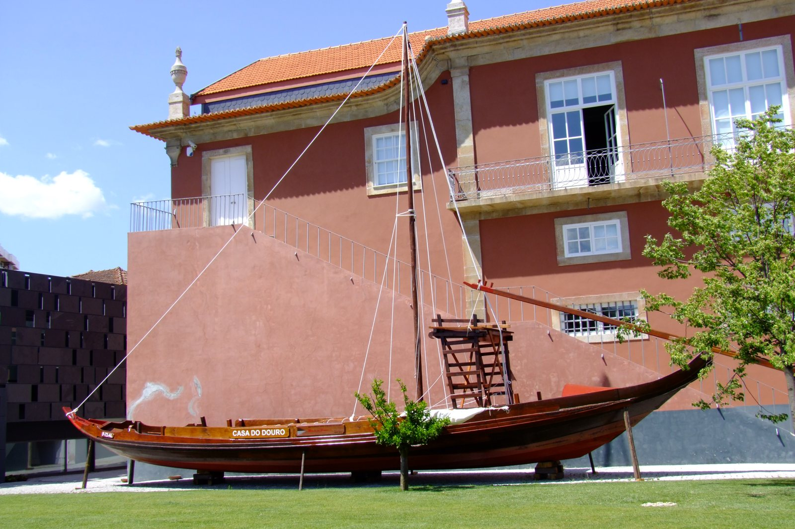
Foto: FWinkel / Wikimedia Commons, CC BY-SA 4.0 Santuário de Nossa Senhora dos Remédios
Lamego · cerca de 19 km (cerca de 30 min) de carro
Santuário barroco construído entre 1750 e 1761, com um escadório de 686 degraus; a festa maior é a 8 de setembro.
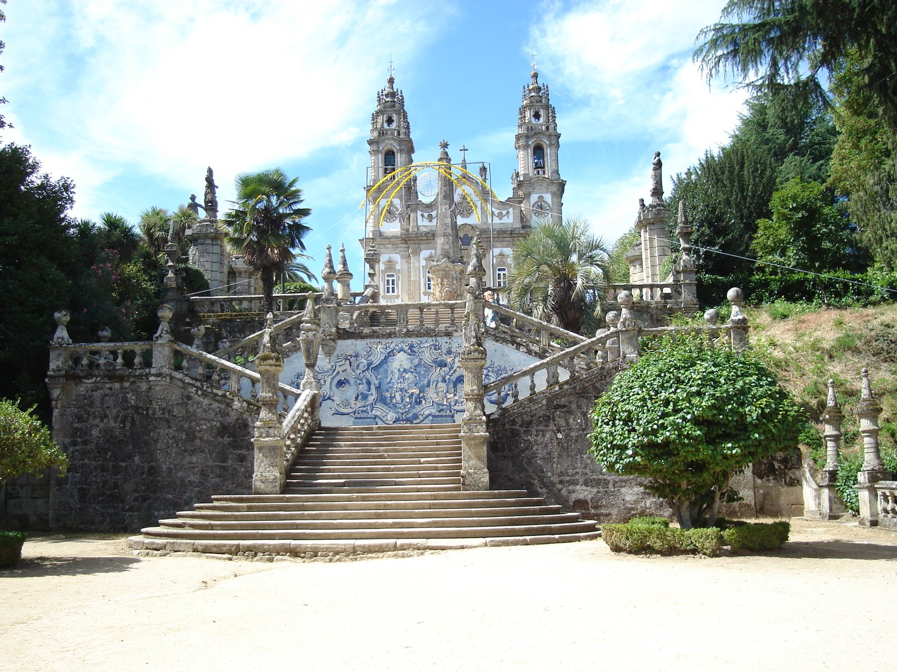
Foto: Mcff / Wikimedia Commons, domínio público
.jpg){kind=link}


Quem lá esteve deu nota máxima.
As 6 avaliações publicadas, de julho e agosto de 2026, têm todas a nota máxima: 5,0 em 5 avaliações no Airbnb, onde a casa é "Favorito dos hóspedes", e 10 no Booking, em 1 avaliação. Notas consultadas a 9 de outubro de 2026.
"Food, sleep, swim, repeat!"Comer, dormir, nadar, repetir!
Diana, Booking
"Espaço muito bonito, as fotos não demonstram como a casa é grande e acolhedora!"Cátia, Airbnb
"Casa maravilhosa e anfitriã muito simpática."Ana Rita, Airbnb
Quem recebe os hóspedes é a Maria, e é o nome dela que aparece nas avaliações.
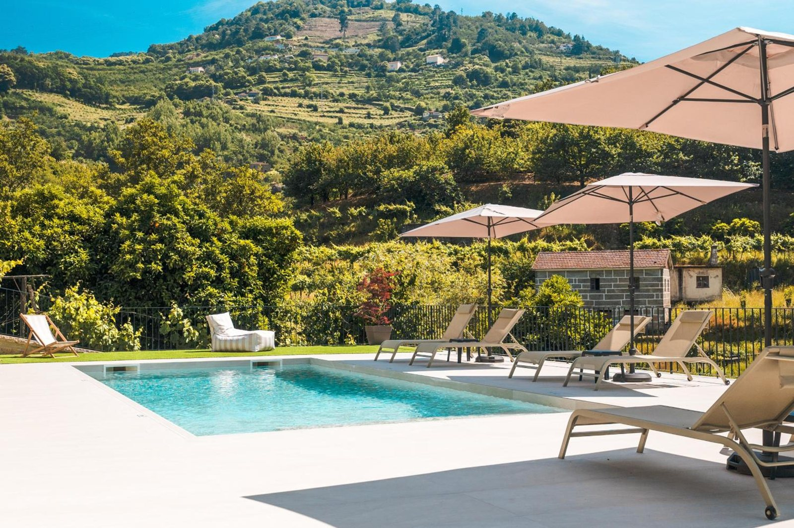
Falta só escolher as datas.
Liguem para perguntar pelas datas livres, ou reservem pelo Booking, pelo Airbnb ou pelo Vrbo.
Ligar 912 331 756Contacto
mariajoaopaulapinto@gmail.com Calçada da Ponte da Alufinha, 142, 4660-339 São João de Fontoura, Resende RNAL 157740/AL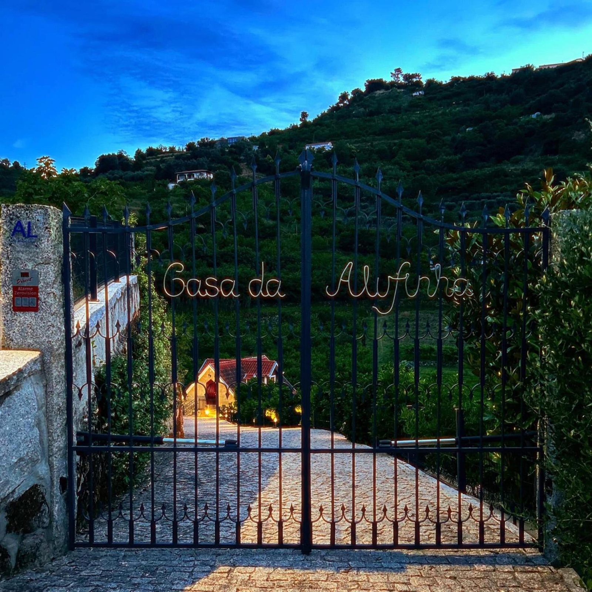